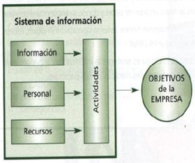
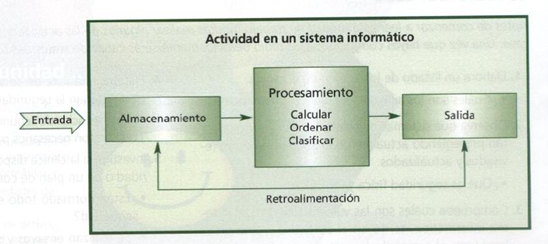

Sistemas de información y sistemas informáticos
Un sistema de información es un conjunto de elementos organizados y relacionados entre sí que facilitan el funcionamiento de una empresa u organización con el fin de cumplir unos objetivos.
Un sistema informático, está constituido por un conjunto de elementos:
- Físicos (hardware, dispositivos, periféricos y conexiones)
- Lógicos (sistemas operativos, aplicaciones, protocolos...)
- Humanos (personal que maneja el hardware y el software)

Los elementos que componen un sistema de información son:
- Información: es un conjunto de datos organizados que tienen un significado.
- Personal: las personas que trabajan en la organización.
- Actividades: son los procesos que realiza la organización, relacionados o no con la informática.
En caso de que estén relacionados, hablaremos de sistemas informáticos en lugar de los sistemas de información.
Concretando, la actividad principal de un sistema informático puede resumirse en el siguiente esquema:

En este módulo nos dedicaremos a concretar que medidas de seguridad deben adoptarse a estos sistemas informáticos.